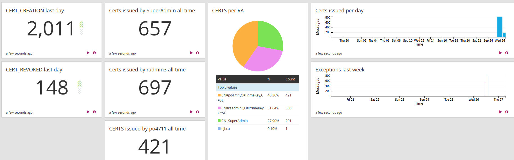

Logging
A PKI system has the following types of logs:
Security Audit Log: Used for PKI auditors to audit important security PKI events that the system performs.
System Log: Used to monitor daily operations in the system, debug and track down errors etc.
Transaction Log: Used for accounting of specific functions, mainly validation (OCSP).
The Security Audit Log specifies in detail what it logs and does not log any other events. The Security Audit log logs important events such as "Certificate issued", "Certificate Profile edited", "Administrator accessed resource". One of the most important aspects to consider is that the Security Audit log does not log things that do not happen. Things that do not happen are for example invalid requests that the system rejects, because the PKI system did not perform any important auditable event.
The System Log logs all events that are interesting to monitor, such as rejecting invalid requests, reading profiles etc.
The main purpose of the Security Audit Log is to provide information to an auditor, and the auditor wants to know what the system has done, what certificates were issued etc, but is not so interested in what the system did not do.
The Security Audit Log is stored in the database and the System Log is stored in log files. By default the System Log also contains the Security Audit Log, but this can be configured.
For more information on the OCSP Transaction Log, see Audit and Account Logging and for information on the WS Transaction Log, see Web Service Interface.
Security Audit Log
The are different logging devices available for official security audit events (creation of certificate etc) and the log device to use is configured in conf/cesecore.properties.
These devices should not be confused with the info/debug output that is sent to Log4J directly. You can find more information on how to configure Log4J in doc/howto/log4j.txt.
It is recommended to only allow new log posts to the database tables. For more information, refer to doc/howto/HOWTO-database.txt.
Services, Modules, Events and Status
The security audit events are divided into Services, Modules, Events according to from where it originates. The full list of the different Service, Module and Event types and a short explanation for each type can be found in JavaDoc format of the API. Since EJBCA is built around the CESeCore project, to see all possible event types that EJBCA can generate both EventTypes and EjbcaEventTypes in the API doc needs to be considered.
An example of how such an event would look like in the server log using the Log4jDevice is the event that the application is starting:
... INFO [Log4jDevice] 2015-03-20 12:47:51+01:00;EJBCA_STARTING;SUCCESS;SERVICE;EJBCA;StartServicesServlet.init;;hostname;;msg=Init, EJBCA 6.3.1Alpha (working copy) startup.and the same kind of event using IntegrityProtectedDevice that writes the log entry to the database:
mysql> select * from AuditRecordData where eventType='EJBCA_STARTING' ... \G pk: 24861ebf7f00010106e5a024d82c694dadditionalDetails: ... Init, EJBCA 6.3.1Alpha (working copy) startup. ... authToken: StartServicesServlet.init customId: NULL eventStatus: SUCCESS eventType: EJBCA_STARTING module: SERVICE nodeId: hostname rowProtection: 1:2:123:4d2f6... rowVersion: 0 searchDetail1: hostname searchDetail2: NULL sequenceNumber: 17640195 service: EJBCA timeStamp: 1426205614754This should be interpreted as the following:
Service is EJBCA (not shown in the Admin GUI) : the event originates from the part of the application that not part of the core shared with other projects.
Module is SERVICE: this event was generated from a module in EJBCA that is responsible for background services.
Event is EJBCA_STARTING: the application EJBCA is starting up.
Status (named Outcome in the Admin GUI) is SUCCESS: in the context of the event, this should be interpreted as no error were detected during the EJBCA startup.
Additionally there is an event specific message with additional information telling us (in this case) the version of EJBCA that was started.
Also note that the time in the log entry itself is the time of the event and might differ from the time when this was written to the server log.
Other references:
Security information about the Database Integrity Protection. For more information, see EJBCA Security.
Local Database CLI to verify protection and export/import data.
For information about the security features and possibilities to repair gaps, see EJBCA Security.
Log4JLogDevice
Appends the information from the official event to the console or file. This is the same target where all the other info/debug output is sent to. There is no protection from alteration and events sent to this device cannot be fetched back to EJBCA for display in the Admin GUI.
IntegrityProtectedDevice
ENTERPRISE This is an EJBCA Enterprise feature.
The integrity protected log device stores audit record in the AuditRecordData table in the database. The record can be protected using either HMAC or digital signatures. See conf/cesecore.properties for configuration options. For more information on Database Integrity Protection, see EJBCA Security.
OldLogDevice
The old log device, as it was called in EJBCA 4.0 is no longer available.
From EJBCA 5.0 the LogEntryData table is no longer used for audit log. The existing log entries can be exported using by using a small export CLI.
Configure conf/database.properties with (if not done already):
database.url=... database.username=... database.password=... then build with $ ant oldlogexport-cli
This will create the CLI in "dist/oldlogexport-cli/". Refer to the README file in this directory for further instructions on how to run it.
OldLogDevice stores log-events in the database. Viewed events can be exported from the Admin GUI.
System Log
The system log is logged using Log4J and has several configurable log levels:
ERROR: Errors that should cause the IT staff to look into the system. It could be fatal, causing the system to stop working.
WARNING: Warnings about misconfiguration. The system is still working, but functionality could be degraded.
INFO: Informational messages that are interesting for monitoring purposes and statistic purposes.
DEBUG: Debug information useful to see details of what is happening in the system.
TRACE: Trace information that can be useful to track down bugs or small misconfigurations. Very rich output showing detailed trace of what happens in the system code.
System log configuration is dependent on the application server used, see Installation Instructions. It is recommended to configure logging in the application server, i.e. JBoss.
In JBoss you can easily enable and disable DEBUG logging and switch back to INFO logging at runtime. To configure the DEBUG log level the first time, run the following JBoss CLI commands:
/subsystem=logging/logger=org.ejbca:add/subsystem=logging/logger=org.cesecore:add/subsystem=logging/logger=org.ejbca:write-attribute(name=level, value=DEBUG)/subsystem=logging/logger=org.cesecore:write-attribute(name=level, value=DEBUG)You can later switch between DEBUG and INFO logging at runtime, for example to specify INFO logging (normal production level):
/subsystem=logging/logger=org.ejbca:write-attribute(name=level, value=INFO)/subsystem=logging/logger=org.cesecore:write-attribute(name=level, value=INFO) In JBoss 7/EAP6/WildFly10, you can configure the logging section of standalone.xml.
The following displays an example of a configuration specifying a more advanced logger, logging of EJBCA events to a separate ejbca.log log file that rotates by size every 32MB, and keeping maximum 31 rotated log files:
<subsystem xmlns="urn:jboss:domain:logging:3.0"> <console-handler name="CONSOLE"> <level name="INFO"/> <formatter> <named-formatter name="COLOR-PATTERN"/> </formatter> </console-handler> <periodic-rotating-file-handler name="FILE" autoflush="true"> <formatter> <named-formatter name="PATTERN"/> </formatter> <file relative-to="jboss.server.log.dir" path="server.log"/> <suffix value=".yyyy-MM-dd"/> <append value="true"/> </periodic-rotating-file-handler> <size-rotating-file-handler name="EJBCAFILE" autoflush="true"> <formatter> <pattern-formatter pattern="%d{HH:mm:ss,SSS} %-5p [%c] (%t) %s%E%n"/> </formatter> <file relative-to="jboss.server.log.dir" path="ejbca.log"/> <rotate-size value="32M"/> <max-backup-index value="31"/> <append value="true"/> </size-rotating-file-handler> <logger category="com.arjuna"> <level name="WARN"/> </logger> <logger category="org.jboss.as.config"> <level name="DEBUG"/> </logger> <logger category="sun.rmi"> <level name="WARN"/> </logger> <logger category="org.ejbca"> <level name="DEBUG"/> <handlers> <handler name="EJBCAFILE"/> </handlers> </logger> <logger category="org.cesecore"> <level name="DEBUG"/> <handlers> <handler name="EJBCAFILE"/> </handlers> </logger> <root-logger> <level name="INFO"/> <handlers> <handler name="CONSOLE"/> <handler name="FILE"/> </handlers> </root-logger> <formatter name="PATTERN"> <pattern-formatter pattern="%d{yyyy-MM-dd HH:mm:ss,SSS} %-5p [%c] (%t) %s%e%n"/> </formatter> <formatter name="COLOR-PATTERN"> <pattern-formatter pattern="%K{level}%d{HH:mm:ss,SSS} %-5p [%c] (%t) %s%e%n"/> </formatter></subsystem>Logging to Syslog
You can configure JBoss/WildFly to log to syslog and there are different configurations you can use.
The following shows an example for JBoss EAP7/WildFly 10+ to log to a remote syslog server, using syslog on TCP port 514. You can tweak the settings to suit different syslog servers.
<custom-handler name="SYSLOGTCP" class="org.jboss.logmanager.handlers.SyslogHandler" module="org.jboss.logmanager"> <level name="INFO"/> <encoding value="ISO-8859-1"/> <formatter> <pattern-formatter pattern="%-5p [%c] (%t) %s%E%n"/> </formatter> <properties> <property name="appName" value="EJBCA"/> <property name="facility" value="LOCAL_USE_5"/> <property name="serverHostname" value="syslogserver-at.mydomain.com"/> <property name="hostname" value="-"/> <property name="port" value="514"/> <property name="syslogType" value="RFC5424"/> <property name="protocol" value="TCP"/> <property name="messageDelimiter" value="-"/> <property name="useMessageDelimiter" value="true"/> </properties></custom-handler>Log Signing
Log signing requirements (signed log files) can be fulfilled in a number of ways. For example:
Using the built in EJBCA Database Integrity Protection. For more information, see EJBCA Security.
Signing logs using external logs as they are being rotated. For more information, see External Log Signing in EJBCA Security.
Exporting Audit Logs
All installations have their specific requirements for how audit logs should be handled. There are a number of ways to Export Audit Logs:
Rotate system log files (including the audit log) and archive/process the rotated log files
Use a SYSLOG appended to send the System log (including the Audit log) to a central log server that performs monitoring functions
Export the database audit log using the Local Database CLI
Export the database audit log using database tools
Export a specific view from the View Log page in Admin GUI to an XML file
Export a specific view from the View Log page in Admin GUI to a signed CMS (Cryptographic Message Syntax)
Log Monitoring
When monitoring logs from EJBCA, the common trigger to monitor is ERROR events in the System Log.
For example, if there is an error to initialize an HSM during startup:
10:46:53,099 ERROR [org.cesecore.keys.token.p11.Pkcs11Wrapper] (default task-9) Wrong arguments were passed to sun.security.pkcs11.wrapper.PKCS11.CK_C_INITIALIZE_ARGS.getInstance threw an exceptionAn error event like this should trigger an operator to inspect the system to investigate the issue.
Integrating with a SIEM
You can integrate EJBCA with a Security Information and Event Management (SIEM) software by sending logs to it.
Graylog
Graylog can consume syslog, and other log formats. The following sections list steps required to send syslog traffic to Graylog and configure it to visualize some interesting statistics.
Install Graylog
The first step is to install Graylog. You can get started quickly for testing by starting up a machine in AWS using the AMI, using the OVA VM, or using Docker containers. For more information, refer to the Graylog documentation on Download & Install Graylog.
Enable Syslog TCP input
This example uses syslog over TCP. To enable using syslog TCP input in Graylog, do the following:
Go to the Graylog Web Console and select System > Input.
Select Syslog TCP in the Select Input list menu and click Launch new input.
Configure EJBCA Logging
On the EJBCA server, configure WildFly to send messages to Graylog with syslog TCP. This is done by adding the following section in the logging subsystem in the JBoss/WildFly standalone.xml:
<custom-handler name="SYSLOGTCP" class="org.jboss.logmanager.handlers.SyslogHandler" module="org.jboss.logmanager"> <level name="INFO"/> <encoding value="ISO-8859-1"/> <formatter> <pattern-formatter pattern="%-5p [%c] (%t) %s%E%n"/> </formatter> <properties> <property name="appName" value="WildFly"/> <property name="facility" value="LOCAL_USE_5"/> <property name="serverHostname" value="ec2-52-72-41-146.compute-1.amazonaws.com"/> <property name="hostname" value="-"/> <property name="port" value="514"/> <property name="syslogType" value="RFC5424"/> <property name="protocol" value="TCP"/> <property name="messageDelimiter" value="-"/> <property name="useMessageDelimiter" value="true"/> </properties></custom-handler>You also need to configure the root-logger to use the new handler, this will start sending the same logs to syslog. Add the new handler by modifying the root-loggers section in standalone.xml:
<root-logger> <level name="INFO"/> <handlers> <handler name="CONSOLE"/> <handler name="FILE"/> <handler name="SYSLOGTCP"/> </handlers></root-logger>You can limit the logging further to only include the audit log, by configuring to only send events from org.cesecore.audit.impl.log4j.Log4jDevice to the syslog handler. This may be good if your main interest is statistics, but you will then miss things like Exceptions in the log.
Send some log items by performing an action in the EJBCA Admin UI, for example saving a certificate profile.
Create Graylog Extractors
Graylog Extractors are used to extract fields, that can be used in queries in Graylog, from the log stream. Create extractors for your log input under System > Input in the Graylog Web Console.
You can analyze log items and create the extractors you need. In our example, the following extractors are created:
RADN: An administrators DN who issued a certificate, for example 'CN=RA Admin,O=PrimeKey,C=SE'
Extractor type: Split & Index
Split by: ;
Target index: 6
EVENT: The event that happened, for example 'CERT_CREATION'
Extractor type: Split & Index
Split by: ;
Target index: 2
CERTPROFILE: the certificate profile a certificate was issued for, for example 'certprofile=346136222'
Extractor type: Split & Index
Split by: ;
Target index: 11
You can edit and create extractors of many different types, the above are simple examples.
Once the extractors have been created, go to EJBCA and make some actions to log something you want to visualize. For example, running the stresstest clientToolBox stress to issue a bunch of certificates, by different RAs.
Create Graylog Dashboard
Graylog dashboards allows you to build pre-defined views and visualize your data.
To create a new Graylog Dashboard, do the following:
Go to the Dashboards section and click Create dashboard to create a new dashboard called EJBCA stats.
Go to Search and create some searches for your dashboard.
Add and Visualize Searches on Dashboard
The following provides examples of search result information that you can add to your dashboard. This screenshot displays a dashboard with the search examples added and shows some sample test data:

Note that the examples may not suite your needs. For example, searching for all time may not be suitable if you have very large datasets, and will not give correct numbers if you start using Graylog when you have already run EJBCA for a while (thus it will not show all time since EJBCA was installed).
Examples of search result information to visualize:
CERT_CREATION last day
Search in the last 1 day
EVENT:CERT_CREATION
Click Add count to dashboard
CERT_REVOKED last day
Search in the last 1 day
EVENT:CERT_REVOKED
Click Add count to dashboard
Certs issued by SuperAdmin all time
Search in all messages
EVENT:CERT_CREATION AND RADN:CN=SuperAdmin
Click Add count to dashboard
Certs per RA
Search in all messages
EVENT:CERT_CREATION
Select RADN and click to expand, click Quick values, and then Add to dashboard when you see the graph.
Certs issued per day
Search in the last 30 days
EVENT:CERT_CREATION
Select Day in the Histogram and then click Add to dashboard
Exceptions last week
Search in the last 7 days
Exception
Select Hour in the Histogram and then click Add to dashboard
You can now go to your dashboard and rearrange the widgets using Unlock/Edit.